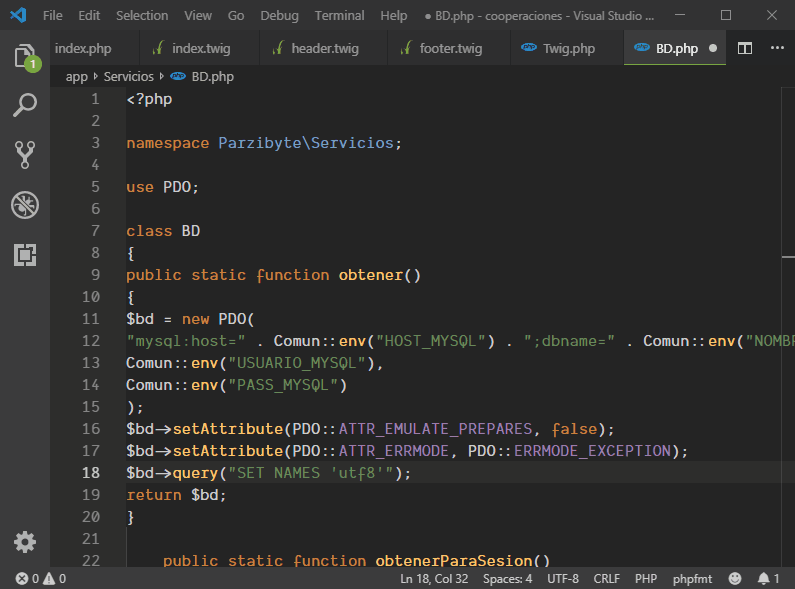

PHP (Hypertext Preprocessor) es un lenguaje de programación interpretado que se utiliza para la generación de páginas web de forma dinámica.
Éste código se ejecuta al lado del servidor y se incrusta dentro del código HTML. Cabe destacar que es un lenguaje de código abierto, gratuito y multiplataforma

Lo que distingue a PHP de algo del lado del cliente como Javascript es que el código es ejecutado en el servidor, generando HTML y enviándolo
al cliente.El cliente recibirá el resultado de ejecutar el script, aunque no se sabrá el código subyacente que era. El servidor web puede ser configurado
incluso para que procese todos los ficheros HTML con PHP, por lo que no hay manera de que los usuarios puedan saber qué se tiene debajo de la manga.
Las páginas que se ejecutan en el servidor pueden realizar accesos a bases de datos, conexiones en red, y otras tareas para crear la página final que verá el cliente.
El cliente solamente recibe una página con el código HTML resultante de la ejecución de la PHP. Como la página resultante contiene únicamente código HTML, es compatible
con todos los navegadores.
¿PARA QUÉ SE UTILIZA PHP?
El lenguaje PHP es de uso libre y gratuito y permite, siguiendo unas reglas, combinar en un mismo archivo código PHP con código HTML.
PHP se utiliza fundamentalmente para realizar páginas web dinámicas y este lenguaje es procesado en servidores. Muchos programadores consideran que es muy sencillo
para aprender cuando estás empezando en el sector y que a su vez ofrece muchas características avanzadas para poder ir desarrollando a medida que trabajas con él.
Este lenguaje de programación también permite procesar información de formularios, enviar y recibir cookies, construir aplicaciones web o crear imágenes a partir de datos. <